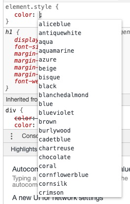
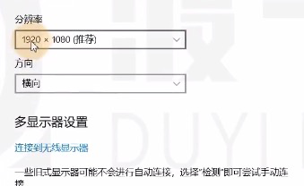
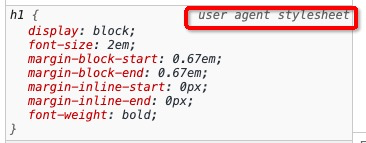

color
内部文字的颜色
- 值的第一种写法： 预设值 – 定义好的单词，css已经写好了一些常用的单词，代表颜色

- 值的第二种写法： 三原色, 色值 – 每个颜色可以使用0-255的数字来表达
1 | rgb表示法 |
光学三原色知识：https://baike.baidu.com/item/三原色/764849?fr=aladdin
background-color
元素背景颜色
font-size
元素内部文字的尺寸大小
px: 像素（绝对单位）
咱们看到的图片也好，电脑屏幕也好，是由很多的点组成的，比如下图，是一张电脑分辨率，表示的意思的 显示器 横向上有1920个点，纵向上有1080个点，每一个点都是一个 像素点

em: 相对单位
相对于父元素的字体大小, 最终都会换算成像素值
2em: 指的是父元素字体大小的两倍
1 | <div style="font-size: 10px"> |
如果父元素没有字体大小，就往上找，去找它继承的字体大小，如果一直找到html根元素，html也没有声明字体大小的化，则使用基准字号
每个元素都必须有字体大小，如果没有声明，则直接使用父元素的字体大小，如果没有父元素，则使用基础字号
基准字号：浏览器设置的字体大小，可以看下浏览器的设置

##扩展知识：user agent 用户代理（这里指的就是浏览器）
如下图所示，用户代理（也就是浏览器）会默认的设置一些样式

更多知识：https://baike.baidu.com/item/用户代理/1471005?fromtitle=User Agent&fromid=11183847&fr=aladdin
font-weight
文字粗细程度，可以取值为数字，可以取值为预设值
| 预设值 | 数字 |
|---|---|
| normal | 400 |
| bold | 700 |
扩展元素：strong 元素
也是默认加粗的效果
strong: 表示重要的，不能忽略的内容
font-family
文字类型
宋体，微软雅黑，楷体 …
这里的取值有个前提条件，必须计算机用户存在的字体才有效
如果计算机不存在这个字体，那么浏览器就会忽略这个属性设置，所以针对于上述情况，可以设置多个字体
1 | font-family: 楷体，宋体，微软雅黑..... |
##扩展知识：sans-serif
字体的边缘没有经过修饰，使用这种字体往往是因为用户的计算机是很老式的计算机，不支持现在的很多字体，让计算机默认的选择一个非衬线字体。
因为每个计算机，都会默认有两个字体，一个非衬线字体，一个衬线字体。
所以一般在设置字体类型时，为了兼容一些老式的电脑，都会在最后默认加上 sans-serif 非衬线字体
更多字体：https://baike.baidu.com/item/衬线字体/6820704?fr=aladdin
font-style
字体样式，通常用它设置斜体
扩展元素: i元素 em元素
都是表示倾斜字体
i元素：实际使用中，通常用它表示一个图标，不用来表示倾斜字体
text-decoration
文本修饰的意思，给文本加线
- line-through: 中间穿过一条线 比如：del元素
- underline: 底下加条线 比如：a元素下面的线
扩展元素 del元素，s元素
| 元素 | 语义 |
|---|---|
| del元素 | 错误的内容 |
| s元素 | 过期的内容 |
text-indent
首行文本缩进
| 值 | 意思 |
|---|---|
| px | 缩进多少个像素 |
| em | 缩进多少个文字(中文是两个字符,英文是中文的两个字符的长度) |
lint-height
行高: 每行文本的高度,该值越大，每行文本的距离越大
用法1
设置行高为容器的高度，可以让单行文本垂直居中
1 | <p style="background-color: #008c8c; color: white; height: 50px; line-height: 50px;"> |
用法2
可以设置为纯数字，针对于多行文字，就不能设置成绝对的单位，就要用相对的单位，就用到纯数字
1 | line-height: 1.5 |

width 和 height
宽度 和 高度
letter-space
文字间隙
值分两种：像素值，em
text-align
元素内部，元素的水平排序方式
- left 居左
- center 居中
- right 居右